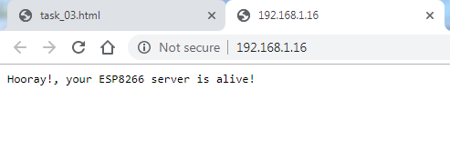
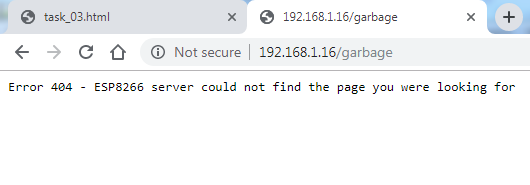

In order to get the ESP8266 to send and receive data, the next task is to make it listen to incoming requests and answer back with messages So, to make it behave like this, let's set up a web server. The web server will listen to any incoming request to the device, and if the request matches a specific pre-defined address, will answer back with a pre-defined answer.
First, include the webserver module
#include <ESP8266WebServer.h>
Next, need to add a server object
ESP8266WebServer server(80);
and 2 functions: one for the default answer, and one for addresses the server doesn't recognize.
void handleRoot(){
server.send(200, "text/plain", "Hooray!, your ESP8266 server is alive!");
}
void handleNotFound(){
server.send(404, "text/plain", "unknown address");
}
as part of the setup - you need to add the functions above as callbacks for specific server route or unknown address and start the server
server.on("/", handleRoot);
server.onNotFound(handleNotFound);
server.begin();
You also need to check for incoming requests so place the following inside your loop
server.handleClient();
#include <ESP8266WiFi.h>
#include <ESP8266WebServer.h>
const char* ssid = "intel makers";
const char* password = "1234567890";
#define ONBOARD_LED_PIN D4
ESP8266WebServer server(80);
void handleRoot(){
server.send(200, "text/plain", "Hooray!, your ESP8266 server is alive!");
}
void handleNotFound(){
server.send(404, "text/plain", "Error 404 - ESP8266 server could not find the page you were looking for");
}
void setup() {
// setup the on-board pin (D4) to output mode
pinMode(ONBOARD_LED_PIN, OUTPUT);
// start serial connection
Serial.begin(115200);
Serial.println("");
Serial.print("Connecting to ");
Serial.println(ssid);
// set WiFi to STA mode
WiFi.mode(WIFI_STA);
// set static IP
IPAddress ip(192,168,1,
IPAddress gateway(192,168,1,254);
IPAddress subnet(255,255,255,0);
WiFi.config(ip, gateway, subnet);
// connect to AP
WiFi.begin(ssid, password);
// wait until connection is complete
while (WiFi.status() != WL_CONNECTED) {
delay(500);
Serial.print(".");
}
Serial.println("");
Serial.println("WiFi connected");
Serial.println("IP address: ");
Serial.println(WiFi.localIP());
server.on("/", handleRoot);
server.onNotFound(handleNotFound);
server.begin();
}
void loop()
{
// toggle the LED each 0.1 second
digitalWrite(ONBOARD_LED_PIN, HIGH);
delay(100);
digitalWrite(ONBOARD_LED_PIN, LOW);
delay(100);
server.handleClient();
}
browse to 192.168.1.
you should see a similar message

and if you browse to some random address, like 192.168.1.
you should get to your 404 (error) message

Click "Test me" when you are ready.